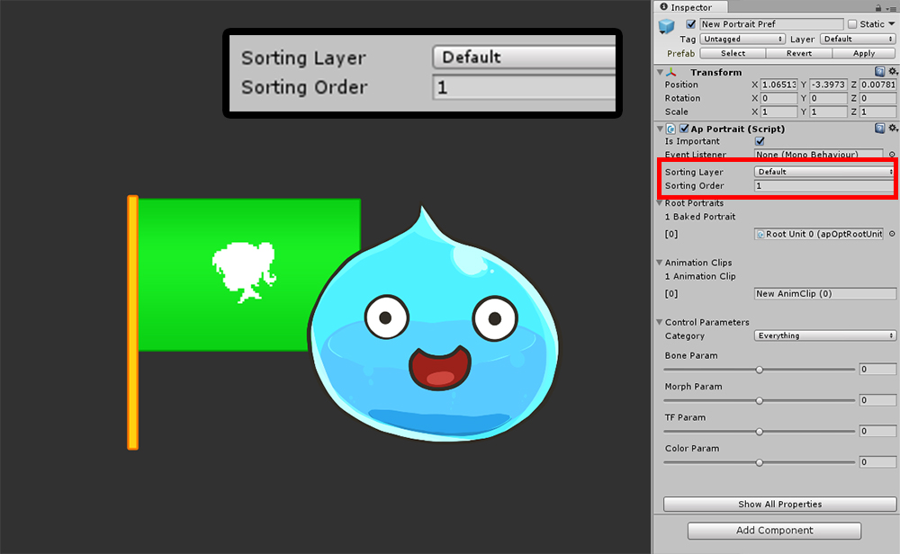
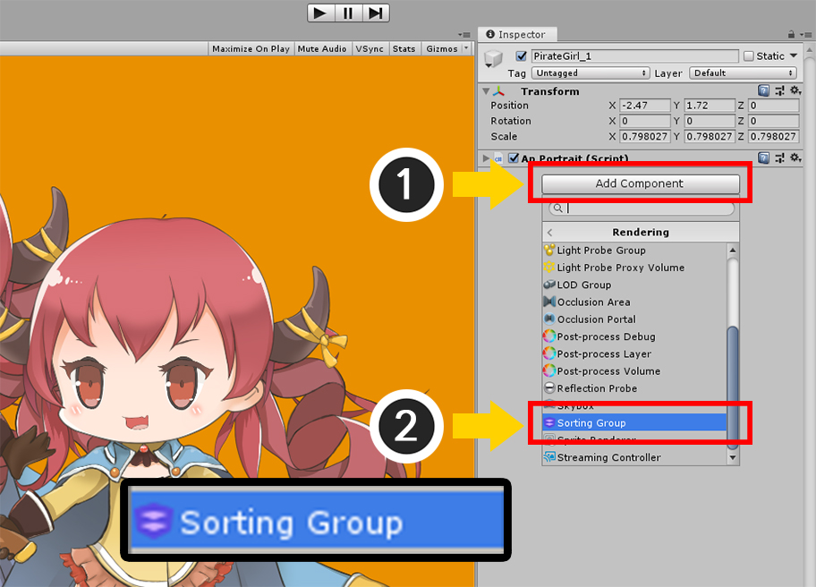
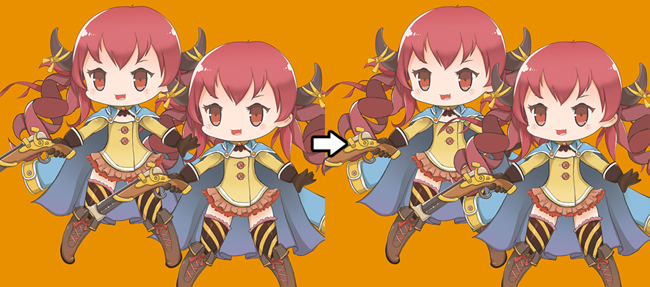
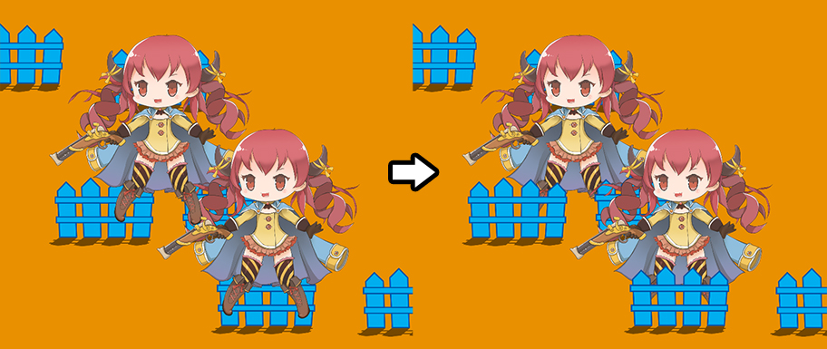

AnyPortrait > Manual > Sorting Layer/Order Setting
Sorting Layer/Order Setting
1.3.0
When you run the game, Unity renders multiple GameObjects one by one.
It is very important to set the order in which they are rendered.
In general, the order is determined by the distance from the camera, but it is possible to specify the order directly.
You can use the Sorting Layer and Sorting Order provided by Unity to determine the rendering order.
Please refer to related page for script document.

You can set the Sorting Layer and Sorting Order in the Bake dialog box.
The sorting layer can be set in Edit > Project Settings > Tags and Layers.
Sorting Order has a value of integer type. The default value is 0.

To test the Sorting Layer / Order function, we placed a GameObject with a Sprite Renderer next to it.
The two GameObjects have the same sorting layer.
The Sorting Order of the Sprite Renderer is 0.

You can modify the Sorting Layer and Sorting Order in the Inspector while the game is running.
If you set the Sorting Order to 1 while the game is running, the slime will be rendered from the front.

Conversely, if you enter a smaller -1 than the Sprite Renderer's Sorting Order, the slime will render from the back.
Sorting Group
As of v1.1.8, AnyPortrait supports Sorting Group.
You can use the Sorting Group to determine the rendering order of objects in a group.
This page covers the issues of using the Sorting Group to solve two cases.

This is an example of when characters are overlapped.
If characters composed of multiple Mesh Renderers or Sprite Renderers are overlapped each other (such as those made with AnyPortrait), the order of rendering between characters is not distinguished, so they are rendered in a complex form.
This issue can be handled by entering a different Sorting Order or Sorting Layer as described above,
but the best way is to group them into a Sorting Group.

Before using the Sorting Group, you need to change the settings of the character created with AnyPortrait.
(1) Open the editor and press the Bake button to open the dialog.
(2) Select the Setting tab.
(3) Change the value of the Sorting Order Option to "Depth To Order".
The setting added in v1.1.8, "Sorting Order Option", determines what order value of each mesh is assigned.
The contents of the options are as follows:
- Set Order : This is the basic way. The values of the Sorting Order item are assigned to the meshes.
- Disabled : Do not set the order of the meshes when baking
- Depth To Order : Order increases from back to front.
- Reverse Depth To Order : Order increases from front to back.
Even if you do not use Sorting Group, you can set Sorting Order Option as needed.
When Sorting Order Option is set to Depth To Order or Reverse Depth To Order,
Order Per Depth option, which allows you to set the interval at which the depth increases, has been added in v1.3.0.

You can also set the Sorting Order Option in the Inspector UI.

Add the Sorting Group component to the character created with AnyPortrait.
(1) Press the Add Component button.
(2) Select and add the Sorting Group component. (We recommend searching and finding.)

Now the meshes are grouped and rendered in nice order.

Second example.
This example is a scene where characters and fences are placed.
This is a common configuration for 2D games where the camera is looking from top to bottom.
The object located below should be rendered in front.
Currently, however, the rendering order is determined regardless of the Y coordinate of the object.
Of course, you can also modify Sorting Order manually with a script,
however, the most convenient way is to modify the project's settings.

(1) Open Project Settings and select Graphics.
(2) Change the Transparency Sort Mode in Camera Settings to Custom Axis
and change the Transparency Sort Axis to (0, 1, 0).
The criteria for determining the rendering order is now changed from the Z axis to the Y axis.

Now let's apply the Sorting Group.
Select the character and change the Sorting Order Option to Depth To Order in the Bake dialog or Inspector UI.

Add the Sorting Group component to the character.

Characters and fences are now rendered in order from top to bottom.